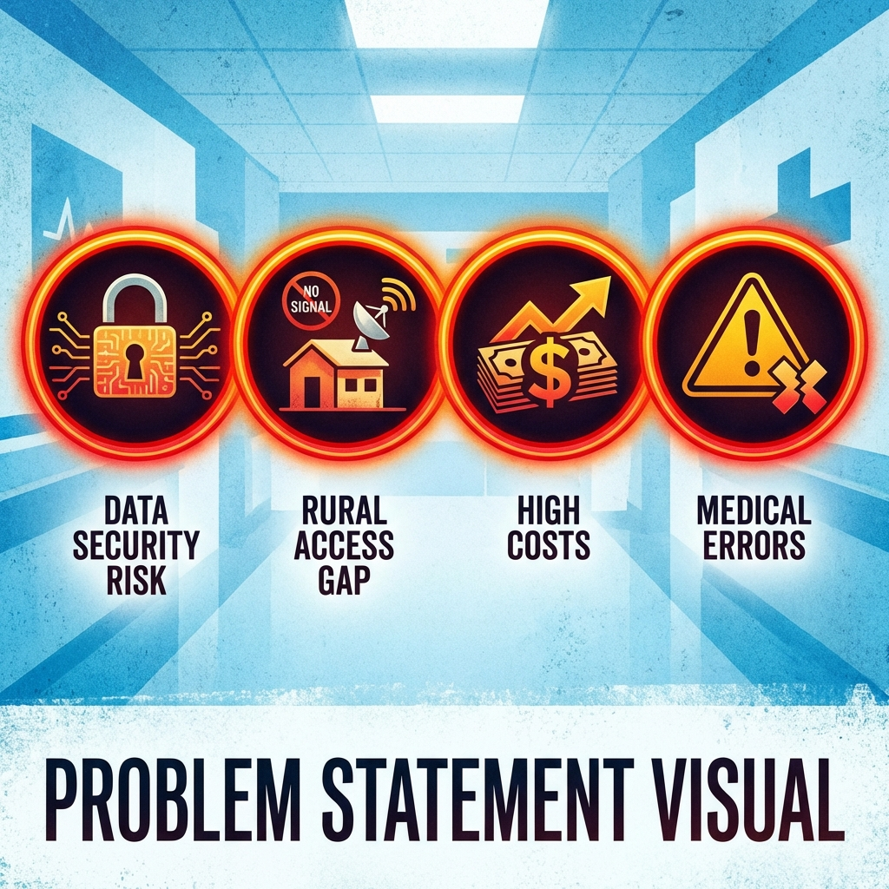
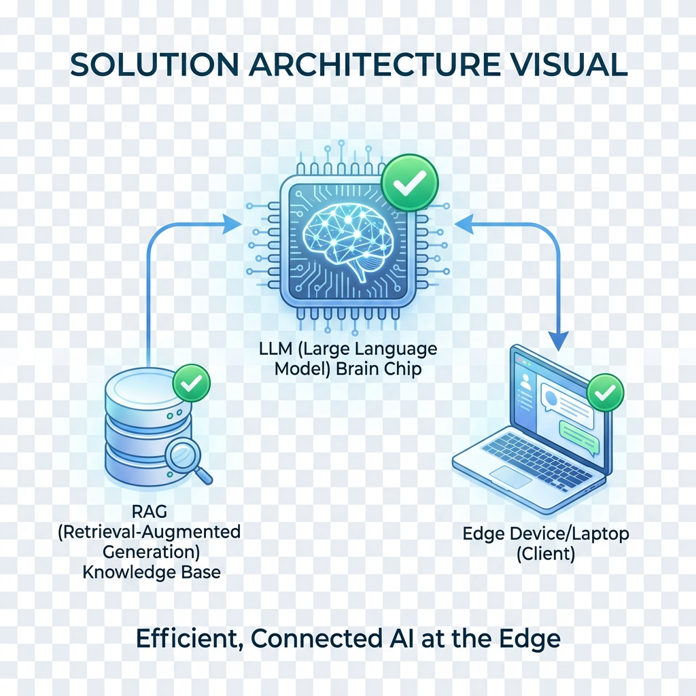
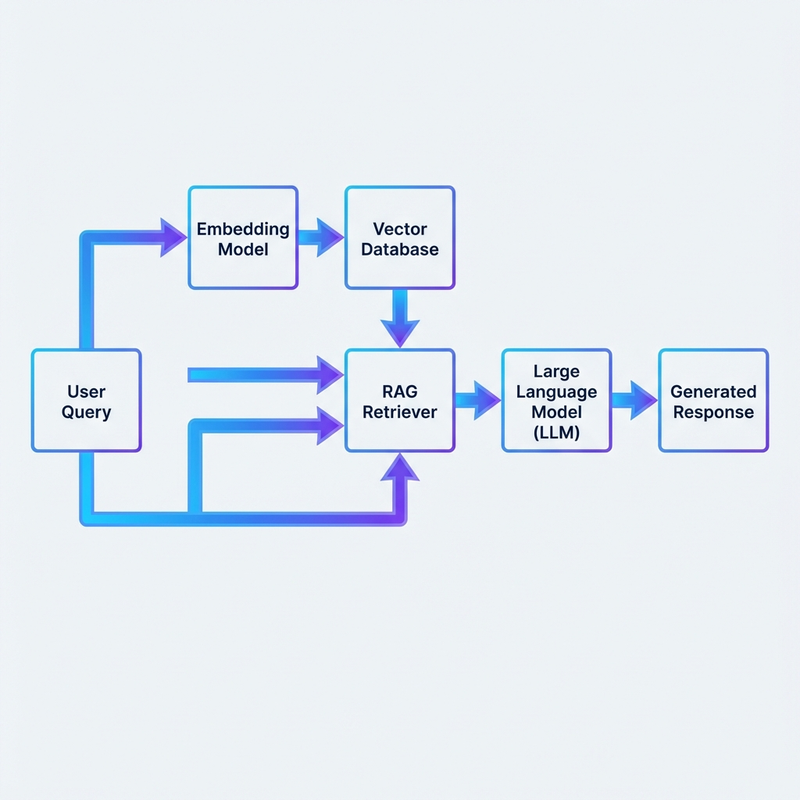
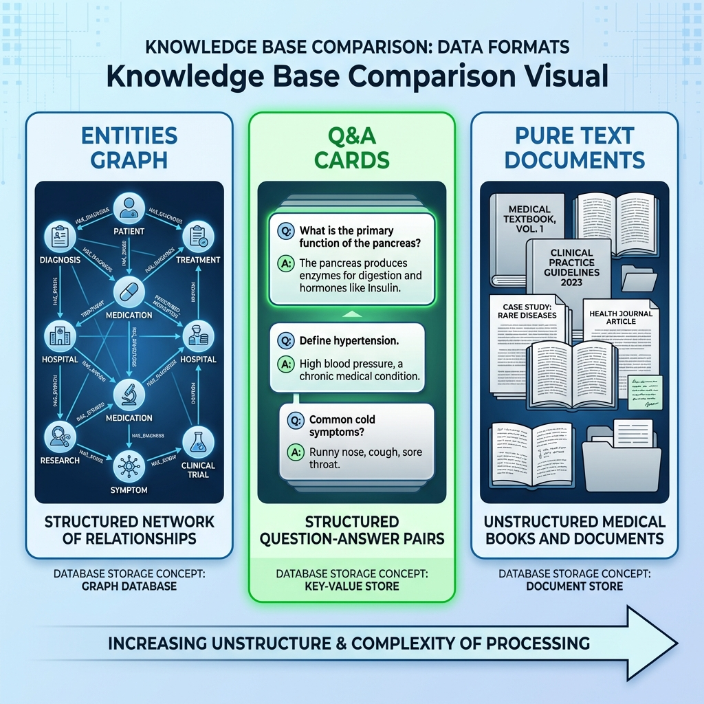
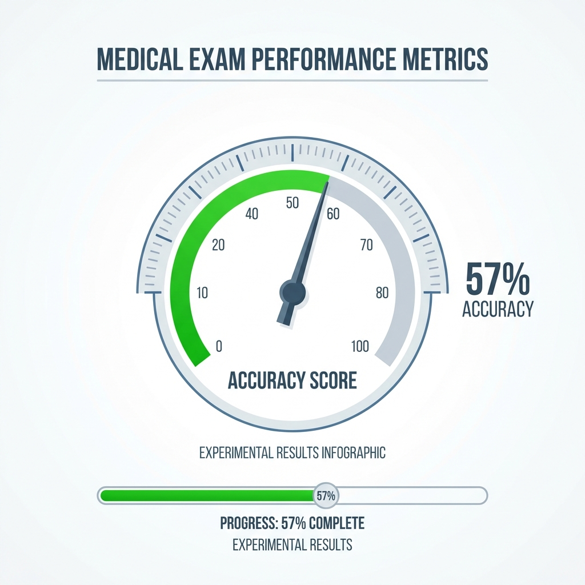
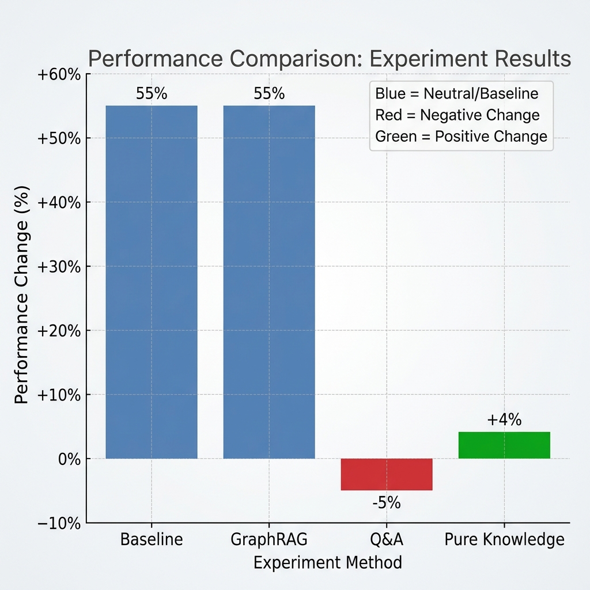
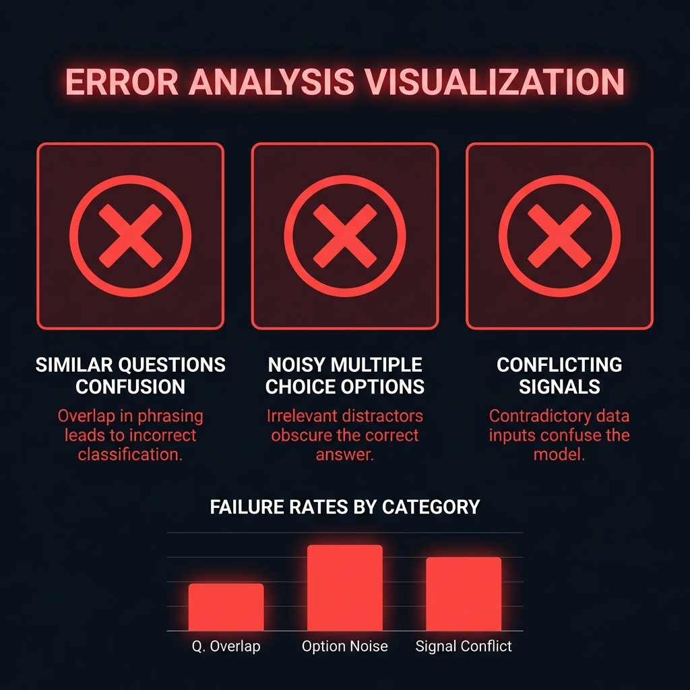
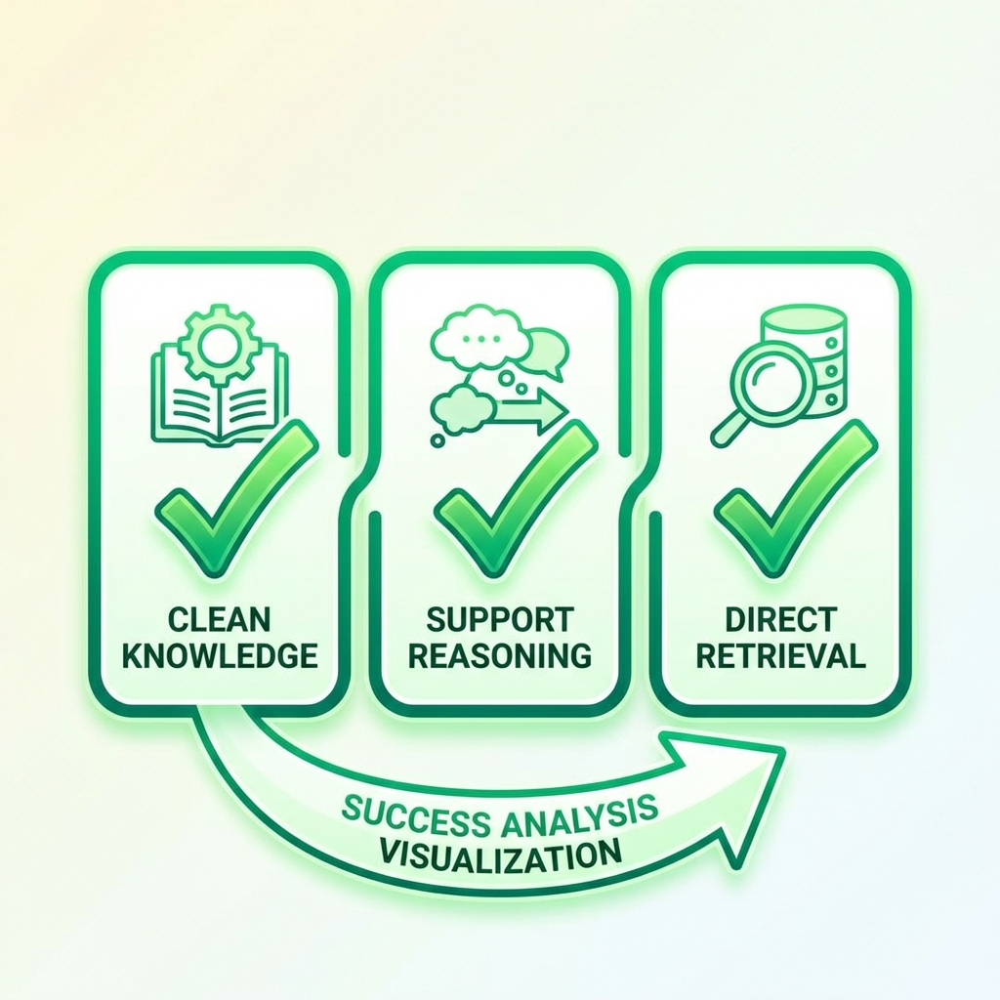
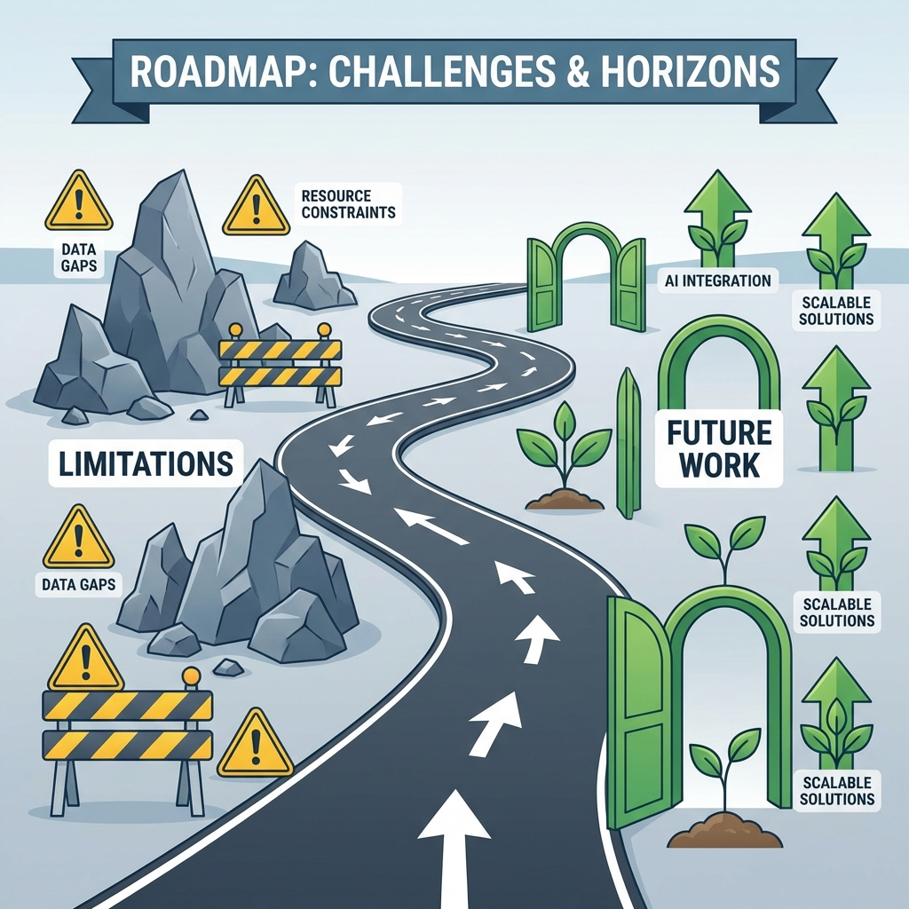
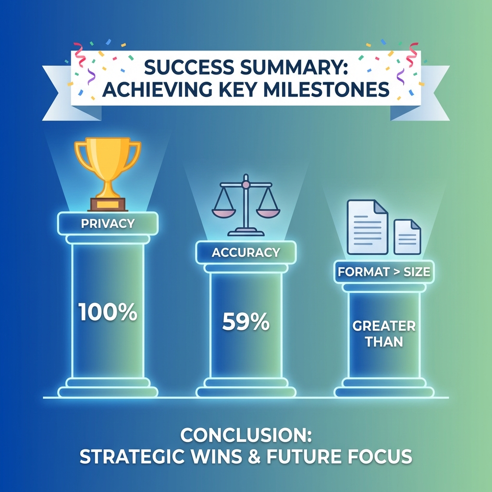

🏥 RAG-MedGemma + EdgeAI
Hệ Thống Hỗ Trợ Ra Quyết Định Lâm Sàng
Hội nghị Khoa học Y Dược 2026 | Phong Dang
📋 Nội Dung Trình Bày
| 1-2 | Đặt vấn đề & Câu hỏi nghiên cứu |
| 3-4 | Phương pháp & Kiến trúc |
| 5-6 | Thiết kế thực nghiệm |
| 7-8 | Kết quả & Phân tích |
🎯 Đặt Vấn Đề
🔒 Bảo mật dữ liệu
🌐 Kết nối mạng
💰 Chi phí API
⚠️ Hallucination
❓ Câu Hỏi Nghiên Cứu
RQ1: Edge AI khả thi với độ chính xác chấp nhận được?
RQ2: RAG format nào giúp cải thiện độ chính xác?
RQ3: Hiệu năng Edge vs Cloud như thế nào?
💡 Giải Pháp Đề Xuất
| Component | Technology | Benefit |
|---|---|---|
| LLM | MedGemma-Q8 | 4GB VRAM |
| RAG | FAISS + Pure Knowledge | Giảm hallucination |
| Edge | Ollama | 100% offline |
🧠 MedGemma Model
Đặc điểm: Google 2024, 4B params, Medical fine-tuned
Q8: 4.13 GB, ~4GB VRAM, 1.4-2.4s/câu
🔍 RAG Architecture
Query → Embedding → FAISS → Context → MedGemma → Answer
📚 Knowledge Base Design
| Format | Docs | Size |
|---|---|---|
| GraphRAG | 1,000 | 1.5 MB |
| Q&A | 10,178 | 14.9 MB |
| Pure Facts | 20,336 | 29.8 MB |
📊 Dữ Liệu Thực Nghiệm
| Dataset | Source | N | Type |
|---|---|---|---|
| MedQA | USMLE | 200 | MCQ |
| PubMedQA | Y sinh | 200 | Yes/No |
| Vietnamese | VN | 100 | Open |
| VQA-RAD | Imaging | 5 | Vision |
🧪 Thực Nghiệm 1: Baseline
| Dataset | Accuracy | Time |
|---|---|---|
| MedQA | 57.50% | 2.43s |
| PubMedQA | 50.50% | 1.40s |
| Vietnamese | ✅ Qualitative | 7.53s |
🧪 Thực Nghiệm 2: RAG Comparison
| Approach | MedQA | Change |
|---|---|---|
| Baseline | 55.0% | - |
| Q&A Format | 50.0% | -5.0% |
| Pure Knowledge | 59.0% | +4.0% |
🔑 PHÁT HIỆN QUAN TRỌNG
Format > Size
Định dạng context quan trọng hơn kích thước dữ liệu
❌ Tại Sao Q&A Format Thất Bại?
Similar questions gây nhiễu
Noisy options A/B/C/D
Conflicting signals
✅ Tại Sao Pure Facts Thành Công?
Clean knowledge
Support reasoning
Direct retrieval
🩻 VQA-RAD: Vision Benchmark
| Image Type | Samples | Accuracy |
|---|---|---|
| X-ray, CT, MRI | 5 | 100% |
⚖️ Edge vs Cloud

| Metric | Edge | Cloud |
|---|---|---|
| Accuracy | 59% | ~85% |
| Privacy | ✅ 100% | ❌ |
| Offline | ✅ | ❌ |
| Cost | Free | API fees |
✅ Trả Lời Câu Hỏi Nghiên Cứu
RQ1: ✅ 57.5% MedQA trên 16GB RAM
RQ2: ✅ Pure Knowledge +4%, Q&A -5%
RQ3: ✅ 59% vs 85%, Edge đảm bảo privacy
⚙️ Cấu Hình Khuyến Nghị
Model: MedGemma-4B-IT-Q8 (4.13 GB)
RAG: Pure Knowledge (20,336 docs)
Hardware: 16GB RAM minimum
Expected: 59% MedQA, 1.4-2.4s latency
⚠️ Hạn Chế & Hướng Phát Triển
| Hạn chế | Hướng phát triển |
|---|---|
| Gap vs Cloud (26%) | Fine-tune trên VN data |
| Limited VN data | Thêm phác đồ Bộ Y tế |
| Small VQA test | Full 451 images |
🎯 Kết Luận

RAG-MedGemma + EdgeAI là giải pháp khả thi
cho CDSS tại các cơ sở y tế Việt Nam
cho CDSS tại các cơ sở y tế Việt Nam
🙏 Cảm ơn đã lắng nghe!